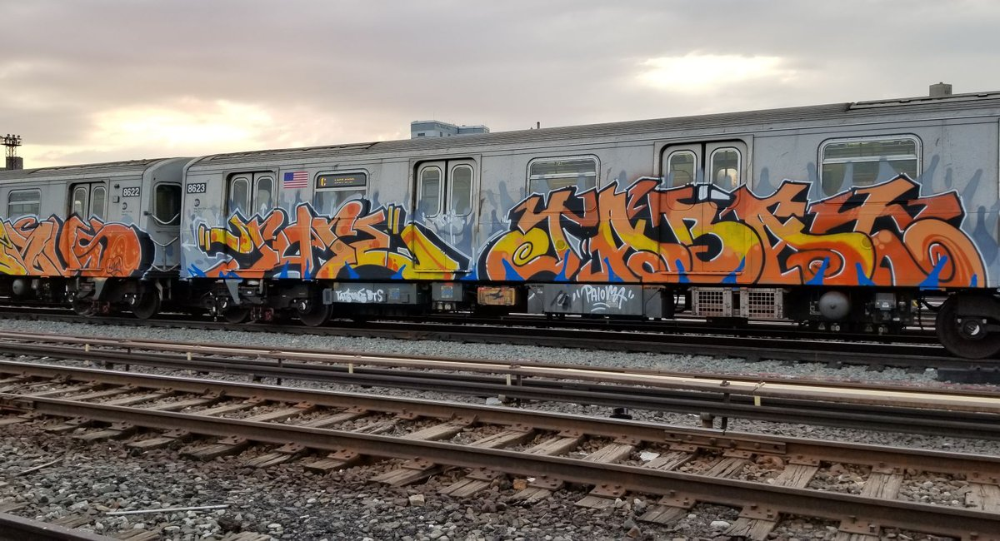
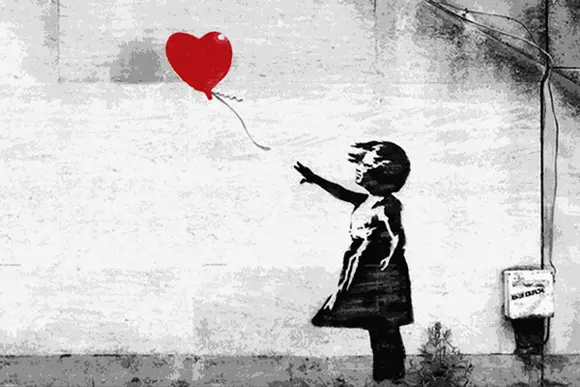

GRAFFITI
Personally graffiti is one of the coolest art forms. It can be a piece or a tag most of the times. The actual definition of graffiti is "writing or drawings scribbled, scratched, or sprayed illicitly on a wall or other surface in a public place" a lot people think graffiti is tacky or "ghetto" but graffiti can be beautiful. Graffiti was first created in 1970 in New York, Usually spoted on trains and buildings.

As shown above these are some beautiful pictures of graffiti pieces done by talented artists. Graffiti is all based on spraypainting and actual painting on walls and its cool how they can get things so detailed for example the piece of 2pac.There is a famous anonymous graffiti artist named Bansky a british man who hasmade pieces that go for millions. No one knows who he is but he is wanted for vandalizing.Below is one of his famous pieces the girl with the red balloon
